Zero-shot fleet coordination from a policy trained only at 4-vs-4
Boost and Broadside is a GPU-tensorized 2D dogfighting simulator and a reinforcement learning system I built on top of it to ask one question: can a policy trained with a small team command much larger fleets without retraining? A single recurrent network, trained only in 4-vs-4 combat on one 8 GB laptop GPU, was then run unchanged on fleets of 1 to 64 ships. It beats a hand-built scripted controller at every size, wins while outnumbered, and is measurably stronger at 8 and 16 ships per side than at the size it trained at.
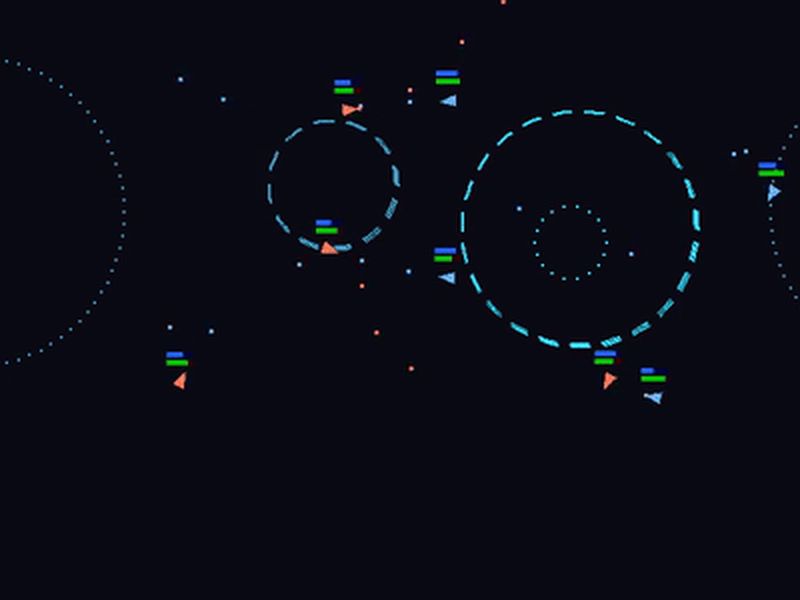
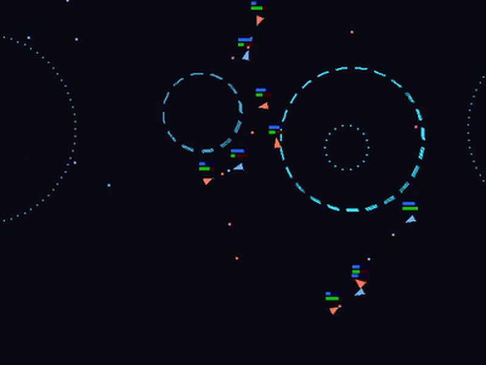
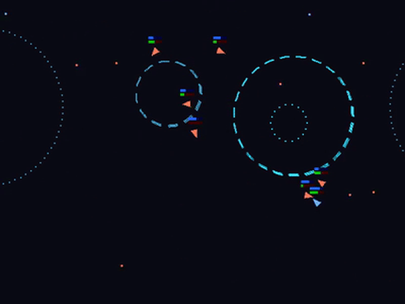
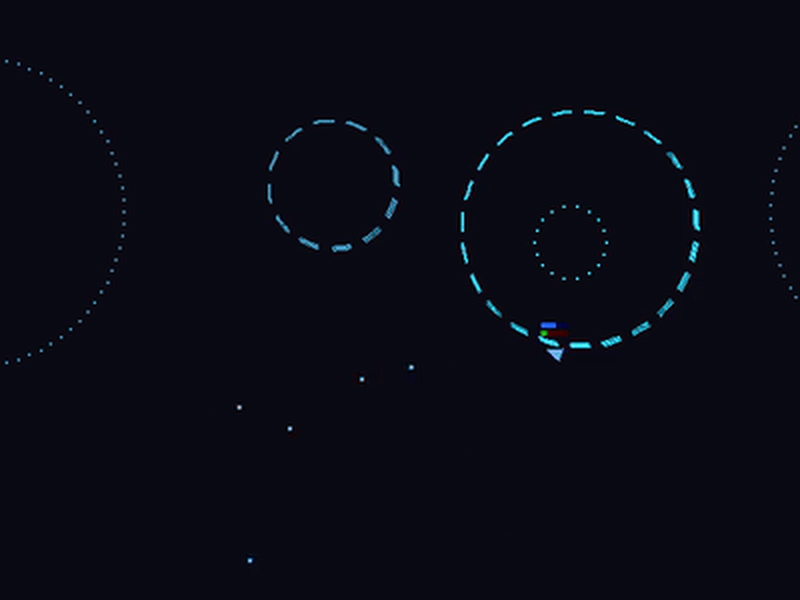
Two teams of ships manoeuvre and fire projectiles on a 1024×1024 toroidal map at 60 Hz until one side is eliminated or a 17.1 s cap is reached. Each ship picks a factored action (power, turn, shoot) 30 times a second. Flight has lift, drag, stall and a battery that thrust draws from; armour is directional, so a head-on hit lands 30% of its damage and a broadside nearly all of it.
Optional refractive fields make the terrain continuous rather than walled. A field
gives a ship an effective mass m = n², so one force law produces smooth
refraction, speed changes and total internal reflection for ships and bullets alike, with
no collision branches or force clamps. Passive motion conserves
½·n²·|v|², and long-run energy conservation is a tested property of the
integrator.
The whole simulator is fixed-shape tensors: ships, per-ship projectile ring buffers and fields are stepped for thousands of environments in parallel. On the laptop GPU, 4,096 environments of eight ships step at 9.5M environment steps/s field-free and about 1.2M with one to four fields (physics only, no policy inference).
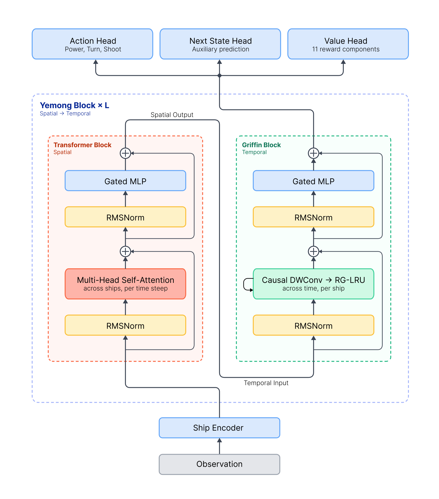
YemongPolicy. Reference configuration: two blocks of two spatial layers and one temporal layer, width 128, four heads.One centralized network commands the whole fleet, producing an action for every ship in a single forward pass. Ships and fields are entity tokens. Within a timestep, spatial self-attention lets every ship condition on every other; across time, a per-ship Griffin-style recurrence (causal depthwise convolution into an RG-LRU) carries memory.
No weight matrix has a ship-count dimension. Attention and recurrence run over whatever token axis is present, and the heads apply per ship token. Several smaller decisions protect that property:
Three heads per ship: factored action categoricals (power 3, turn 7, shoot 2); a value estimate per reward component, with win/loss pooled over each team by attention; and an auxiliary next-state prediction, which gives the policy its name (yemong, a dream that foretells the future).
Recurrent PPO with generalized advantage estimation, half the batch in self-play and half in a league. League opponents (the scripted controller, a running average of the live weights, frozen past checkpoints, and semi-random rungs between random and scripted play) all sit on one continuously updated Elo scale and are sampled by rating proximity, so the ratings themselves are the curriculum and no per-opponent schedule exists. Rewards are emitted as named components, each with its own critic output and horizon. Only five weights are set by hand; the rest follow from one rule, an event pays one side exactly what it charges the other, with a single named exception that pays the side causing an event twice what it charges the side suffering it.
All results are from one run, wild-universe-731, trained at 4-vs-4 with four
fields. The final checkpoint was loaded once and rated in a separate stationary tournament
at each symmetric size, with the scripted controller fixed at 1000.
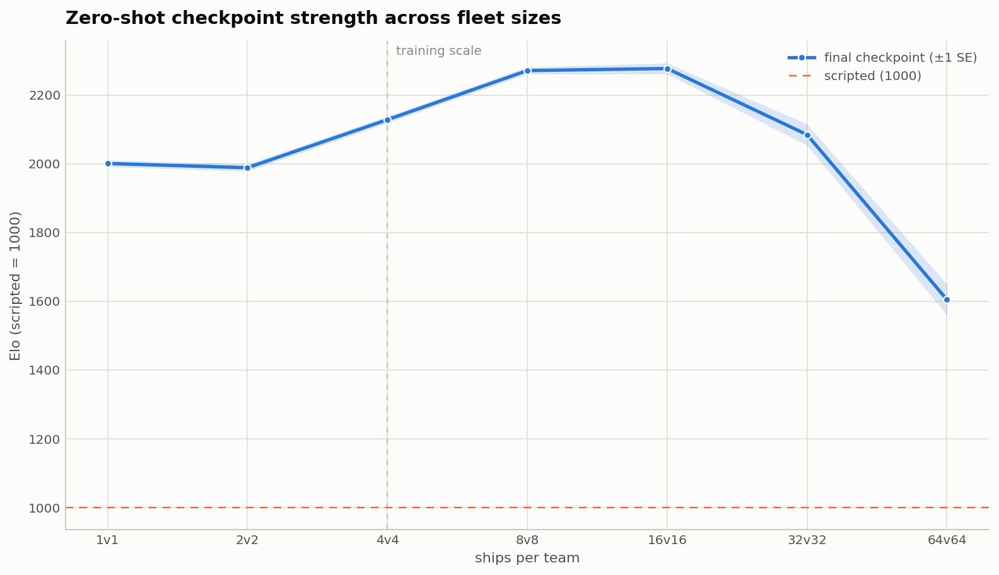
| Ships per team | Tournament games | Elo (±1 SE) |
|---|---|---|
| 1 | 81,920 | 2001 ± 10 |
| 2 | 65,536 | 1989 ± 11 |
| 4 (training size) | 98,304 | 2128 ± 10 |
| 8 | 109,375 | 2271 ± 10 |
| 16 | 46,872 | 2277 ± 16 |
| 32 | 11,712 | 2085 ± 31 |
| 64 | 2,928 | 1605 ± 45 |
The policy is stronger at 8-vs-8 and 16-vs-16 than at the size it trained at, then weakens. Even at 64-vs-64 it sits about 600 points above the scripted controller and wins 93.4% of equal-count games; at 32-vs-32 it wins 99.6%.
The decline at the largest sizes is real, not noise: an independent win-rate sweep (below) turns down in the same place. Something gives out past 16 ships per side, and finding out what is the most interesting open question the project has produced.
A crossover sweep fixes the learned team's size and grows the scripted team until the learned side drops below a 50% win rate (ties count against it). The boundary stays above equal numbers at every size.
| Learned ships | Largest scripted fleet still beaten | Win rate there |
|---|---|---|
| 4 | 7 | 55.9% |
| 8 | 13 | 64.8% |
| 16 | 25 | 61.7% |
| 32 | 46 | 52.3% |
| 64 | 76 | 54.9% |
Final live checkpoint; 256 games per point (204 at 64 ships), so each boundary carries several points of binomial noise.
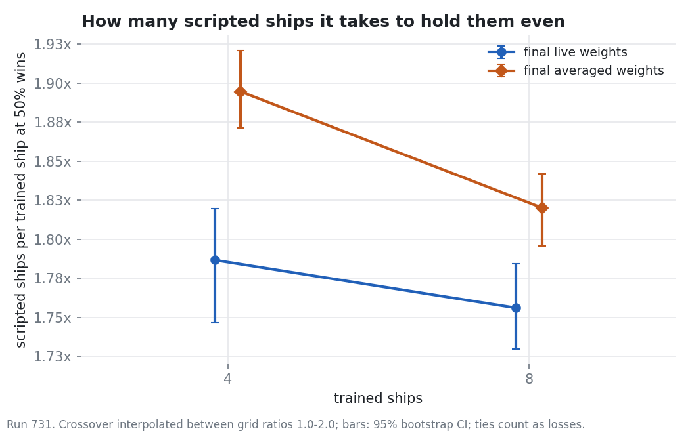
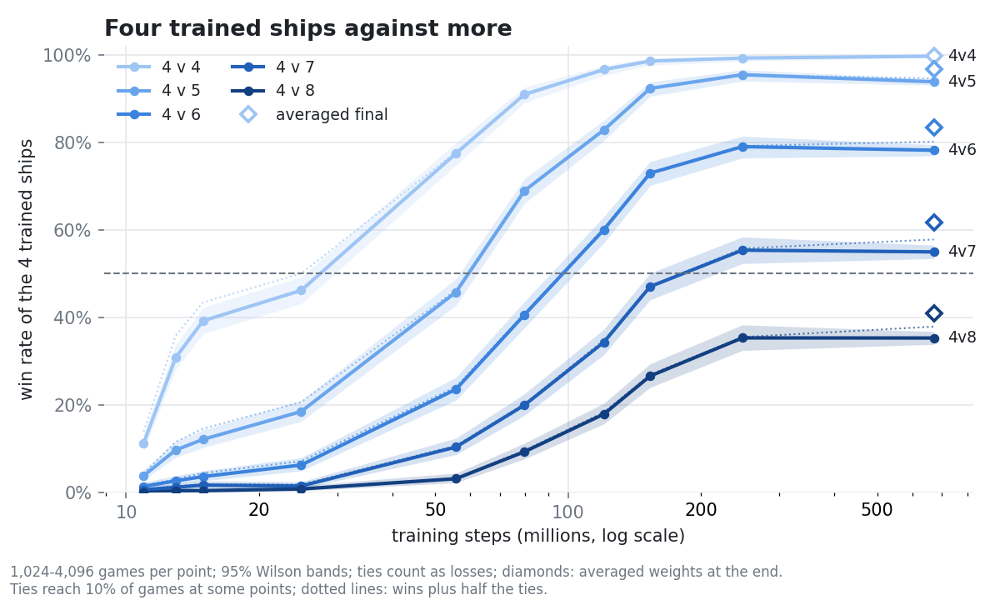
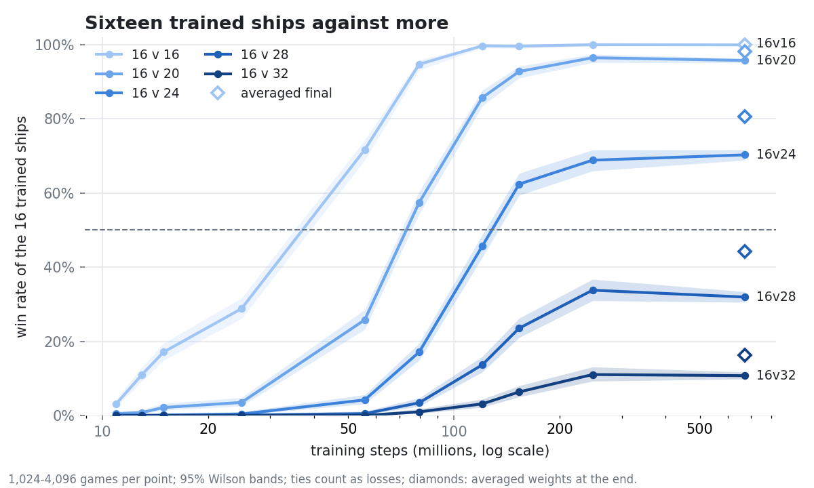
Outnumbered performance emerges in order: equal fights are won first, then each harder ratio in turn, and the live curves stop improving after about 250M steps. The same ordering appears at 16 ships, a size the policy never trained at.
Every run keeps a running average of its weights beside the live ones. The averaged policy rates 58 Elo lower in the symmetric 4-vs-4 tournament, yet wins more at every ratio above equal numbers. Against seven scripted ships, four averaged ships win 61.6% of 4,096 games where the live weights win 55.0%; against eight, 40.9% against 35.3%. Interpolated, the averaged weights hold an even fight against 1.89× their number at 4 ships (95% interval 1.88 to 1.90), 1.82× at 8, 1.71× at 16 and 1.55× at 32. A single symmetric rating would have picked the wrong checkpoint to ship, which is why the evaluation measures both.
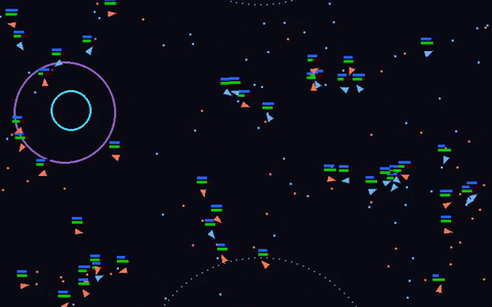
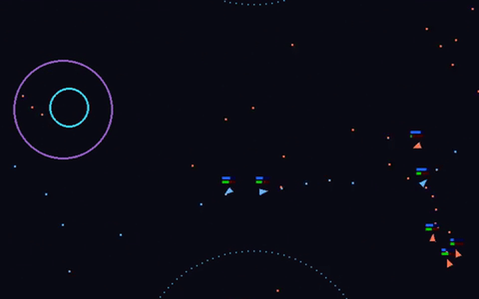
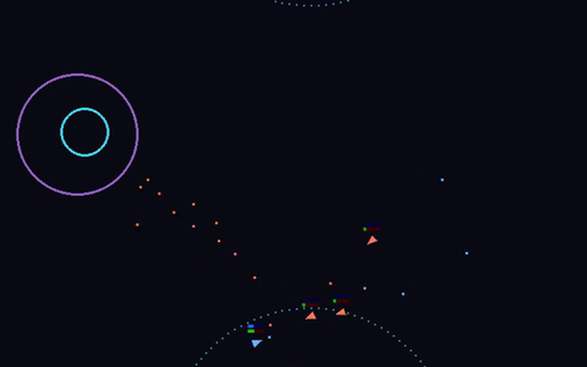
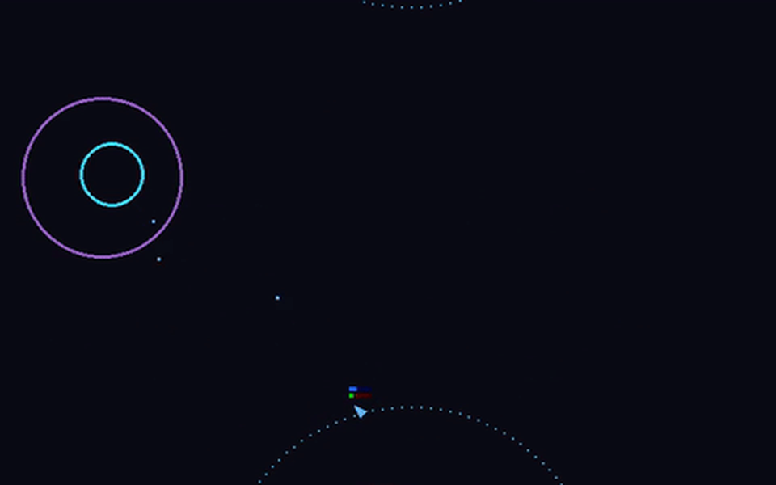
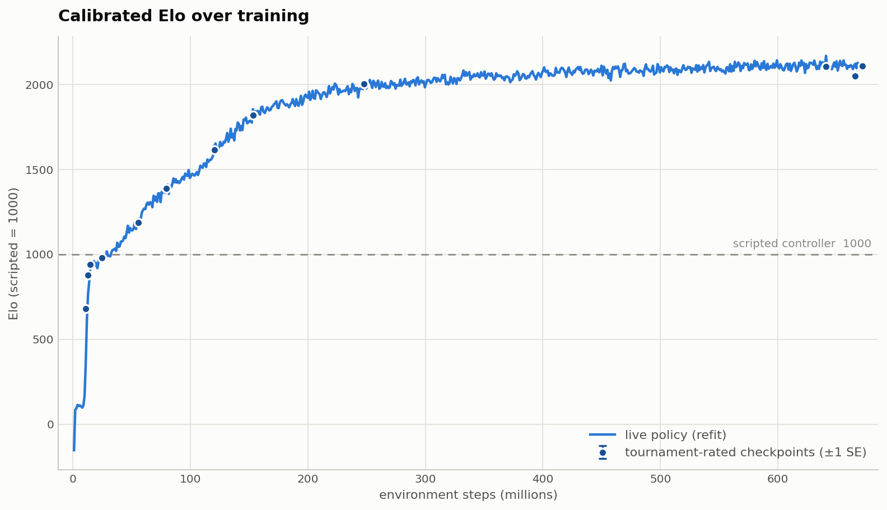
The live policy first wins 99% of games against the scripted controller at 114M steps. After that the benchmark says nothing, while calibrated Elo climbs from about 1,469 at 100M steps to about 2,001 at 250M.
The reported scale is built after training: an adaptive Bradley-Terry tournament among stationary players runs until every rating reaches a target uncertainty (114,688 games, ±12), then each historical policy is refit from its recorded games against those calibrated opponents. Interpolated "semi-random" controllers bridge the gap between random and scripted play, where direct matches are near-certain and carry almost no information. Two tournaments with different fields rate the final checkpoint 2110 ± 11 and 2128 ± 10 at 4-vs-4, about one combined standard error apart.
The reference run logged 671,846,400 environment steps over 674 PPO updates in 70.3 hours,
with a 12M-token logical batch per update, on a laptop GPU. Making that fit was its own
piece of work, organised around a rule: fitting a card must never silently change the
experiment. Memory knobs are sorted into tiers by what they promise, and the launcher
(bnb train --vram) may only move the ones that preserve the objective and the
logical batch.
| Technique | What it buys | Measured cost |
|---|---|---|
| Attention-mask dtype fix | An fp32 mask on bf16 queries silently disqualified the fused attention kernels and materialised the full score matrix. Building the mask in the query's dtype restores the fused path. | None; a latent bug, now pinned by a test |
| Gradient checkpointing | Activation memory cut 54% and made flat in depth; numerically exact | +20.6% update time |
| Host-backed rollout shards | Doubles experience per update (6M to 12M tokens) with effectively zero added persistent VRAM; bulk storage in pageable RAM, pinned staging only for the minibatch in flight | About 4.5% throughput at equal experience (inferred from measured phase times) |
| Reduced-precision buffer | Roughly halves the rollout buffer: bf16 leaf channels, never fp16 (overflow), positions kept fp32 for sub-pixel Fourier encoding, every accumulator fp32 | About 0.4% rounding on read-once channels |
| More, smaller minibatches | Activation memory down 41% (4 to 64 minibatches) | None measurable |
torch.compile | About 6% faster rollout and update | About 360 MB of reserved workspace |
Each row was measured one factor at a time in fresh processes. The launcher can also probe the machine it is on: each candidate configuration runs one full PPO update in its own interpreter, so an out-of-memory failure cannot fragment the allocator for the next attempt, and the result is cached against a readable identity (GPU, library versions, architecture, token geometry) that invalidates itself when any of those change.
I would rather a reader hear these from me than find them.
| Reference run | |
|---|---|
| Run | wild-universe-731, 4-vs-4 with 4 refractive fields |
| Hardware and duration | One RTX 4070 Laptop GPU (8 GB), 70.3 hours |
| Experience | 671.8M environment steps, 674 updates; 2,592 environments × 3 rollouts of 128 steps per update |
| Throughput | 21,239 ship-tokens/s end to end, with full gradient diagnostics enabled |
| Model | Width 128, 4 heads, 2 blocks of (2 spatial + 1 temporal) layers; 12 action logits per ship |
| Algorithm | Recurrent PPO, GAE, 32 minibatches, peak learning rate 4.5e-4, decisions at 30 Hz |
| Final rating | Live 2110 ± 11 Elo; best averaged checkpoint 2052 ± 11; scripted 1000; random 86 |
| Auxiliary dynamics error | Normalised position-x error 4.19 to 0.0027 over training; velocity-x 10.12 to 0.070 |
Where to look in the repository. Results, sample sizes and caveats: docs/evaluation.md.
Architecture: docs/architecture.md. Simulator: docs/environment.md. Training: docs/training.md.
Memory work: docs/engineering/memory-optimization.md. Animated versions of Figures 1 and 8: docs/replays.md.
Built with PyTorch. Techniques drawn on: PPO (Schulman et al., 2017), GAE (Schulman et al., 2015),
Griffin / RG-LRU (De et al., 2024), Set Transformer (Lee et al., 2019), symlog (Hafner et al., 2023),
Bradley-Terry rating (Bradley and Terry, 1952). All measurements in this paper are read from the
repository's stored artifacts for wild-universe-731; ties count as non-wins in every win rate.